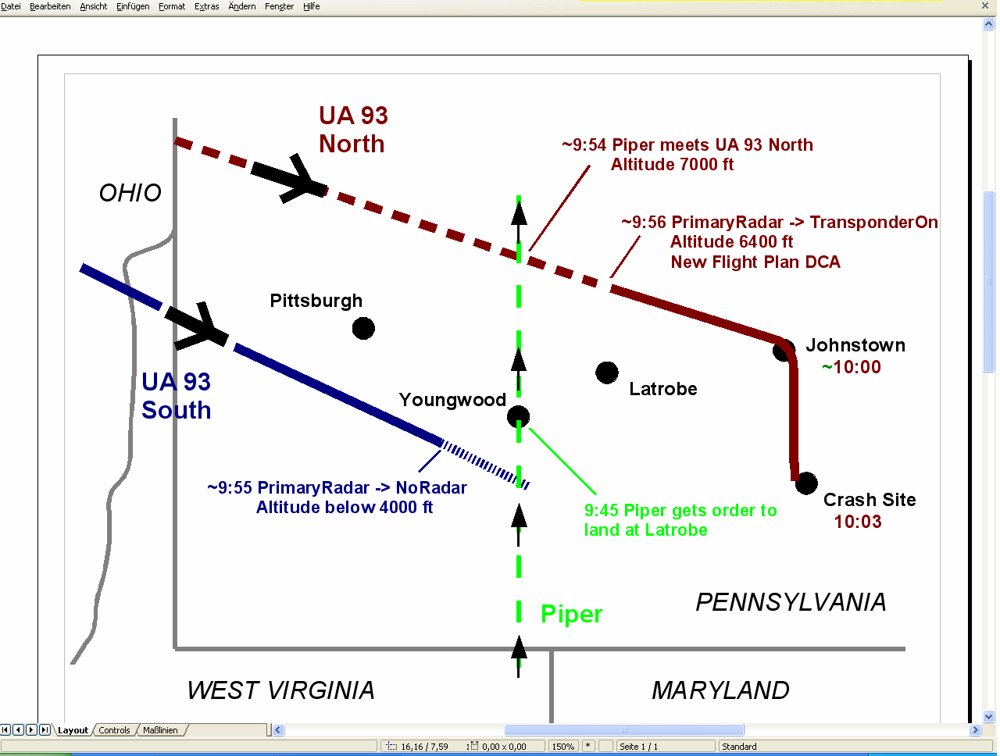
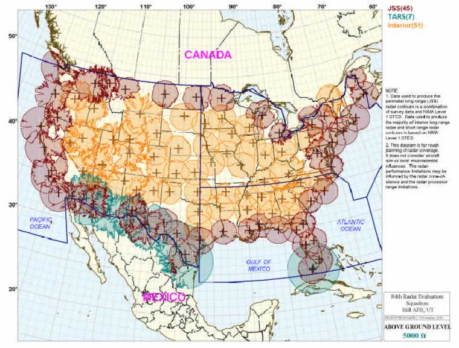

When beginning my research into the emergency landing of Delta Flight 1989 at Cleveland which resulted in The Cleveland Airport Mystery, I stumbled into a mess of conflicting reports making it impossible to obtain a clear picture of the fate of this airplane. I soon realized, however, that the numerous contradictions could be elegantly solved by postulating the existence of two different airplanes. Now, by a process comparable to the untangling of two twisted phone cords, it was possible to establish a consistent timeline for each of both planes.
This article deals with the last ten minutes of Flight 93 over Pennsylvania and, encountering the same contradictions, uses the same methods to solve them. The available accounts on Flight 93 are contradictory concerning its radar status, altitude, and flight path while being in Pennsylvania airspace. The best explanation: there were two different airplanes.
The radar status
The geographical position of a flying airplane is determined by its radar echo. Radar stations send out radar waves into the air, the airplane reflects the waves and appears as a spot on the screens of air traffic controllers, allowing them to track it. This is the so-called primary radar.
The radar technology has been improved in recent years. Every commercial airplane has a special device on board, the transponder. Using the radar waves as carrier, the transponder sends detailed data to the ground, particularly the altitude of the airplane. For our purpose, it's sufficient to know this feature of a transponder.
It is a well-known fact that the transponder of UA 93 - like the ones of the other hijacked airplanes - was switched off. But much less known are two further incidents: the transponder was back on at a later point, and the airplane's radar blip vanished from the controller's radar screens several minutes before the crash.
I will designate the three states as follows:
TransponderOn - the transponder is on. Controllers know the position and altitude of the airplane.
PrimaryRadar - the transponder is off. Controllers still know the position of the moving airplane, but not its altitude.
NoRadar - Controllers have lost the airplane's radar echo completely, i.e. they don't know where it is.
The "transition points", i.e. the moments when the radar status changed, are of crucial significance. The first transition is undisputed among all known reports and documents, including the 9/11 Commission Report: At 9:41, UA 93 was over Canton, Ohio, and switched off the transponder, i.e. TransponderOn -> PrimaryRadar; Air Traffic Control was able to track the plane until at least 9:53 (911 Commission Report, p. 29). It is unclear, however, what happened thereafter. Two versions are available:
Transition A: PrimaryRadar -> NoRadar
This transition is confirmed by three sources:
At 9:53, FAA headquarters informed the Command Center that the deputy director for air traffic services was talking to Monte Belger about scrambling aircraft. Then the Command Center informed headquarters that controllers had lost track of United 93 over the Pittsburgh area. Within seconds, the Command Center received a visual report from another aircraft, and informed headquarters that the aircraft was 20 miles northwest of Johnstown.
— 9/11 Commission Report, page 29/30
9:56:56 The track of UAL93 was no longer visible on the PIT (Pittsburgh Airport) radar displays FAA document, scroll down to the timeline at the end.
— This document was published in 2005 following a FOIA request
Cleveland: He’s just turned to the east of you. United ninety-three, do you hear Cleveland Center? American ten-sixty and Executive nine fifty-six, we just lost the target on that aircraft.
So the radar echo was lost shortly after 9:53 (911 Commission Report) and was gone until at least 9:57 (FAA document), which makes 9:55 (+- 1 minute) a good and narrow estimation for the transition. In Appendix A I will show that the ATC tape does NOT refer to the last seconds of UA 93 near Shanksville, leading to the conclusion that the tape documents the radar loss we are dealing with here, at 9:55.
Transition B: PrimaryRadar -> TransponderOn
This transition is confirmed by many first-hand sources, too:
"Yes. And then the transponder came back on. We got two hits off the transponder. That’s something we’ve always wanted to know. Why did the transponder come back on? Because the hijackers had shut it off so that they couldn’t be tracked, even though we were still tracking them. Now we were getting an altitude read out on the airplane. I can’t remember the precise numbers but it was around 6,400 feet, and then around 5,900 or 5,800 feet. And we’re thinking, ‘Oh, you know? Maybe something’s happened. Maybe this isn’t what we think it is.’"
Just before ten a.m., Dennis Fritz ((air traffic manager)) took a call in the control tower at the airport in Johnstown, Pennsylvania. It was the Cleveland "en route" center. A large, suspect aircraft was twenty miles south of Johnstown, descending below six thousand feet and traveling east at a high rate of speed.
— Jere Longman: Among the heroes, p. 197
"As the plane neared Somerset County, air traffic controllers in Cleveland alerted their counterparts at John P. Murtha Johnstown-Cambria County Airport that a plane was about 12 miles away, "heading directly at the airport at about 6,000 feet,"
Stacey Taylor describes the return of the transponder directly. She is confirmed by Fritz and McKelvey, who got UA 93's altitude from Cleveland Center - an information impossible to obtain without transponder.
Furthermore, according to Fritz and all other sources, UA 93 approached Johnstown just before 10 o'clock, i.e almost the same time when (a different?) UA 93 was lost from radar screens because it was flying too low. So did both transitions happen on the same plane, in very close succession? This assumption meets big obstacles:
Transition A (PrimaryRadar->NoRadar) is not mentioned with one word by Stacey Taylor who was in charge of UA 93.
Transition B (PrimaryRadar->TransponderOn) is not mentioned by the 911 Commission Report; quite to the contrary, the text suggests, in quoting pilots who spotted UA 93, that the controllers had no clue where the plane was after 9:53.
The flight plan change: East of Pittsburgh, UA 93 requested a change of its flight plan, i.e. planned destination.
"At 9:55:11 Jarrah dialed in the VHF Omni-directional Range (VOR) frequency for the VOR navigational aid at Washington Reagan National Airport, further indicating that the attack was planned for the nation's capital.."
— 911 Commission report, p. 457
One minute later, the FAA approved: At 9:56 a.m., Flight 93 asked the Federal Aviation Administration to change its destination to Reagan National Airport in Washington. A minute later, the FAA approved, according to Flight Explorer, a firm that tracks such communications. (US News&World Report, 10/29/01)
At 9:56 a.m., the destination code for the plane in FAA computers was changed from "SFO," the code for San Francisco, to "DCA," the code for Reagan National Airport in Washington. That indicates an air traffic controller probably changed the destination. Typically, that is done only when it is requested by the pilots. (St. Petersburg Times, 9/12/01)
So at 9:56, the FAA approved the flight plan change request of UA 93, at exactly the same time when (the same?) UA 93 was lost from radar. Given this is technically possible - would the FAA controllers really do that for a plane which they were unable to locate? Or was it a different plane?
In the next two sections it will be shown that the altitude and flight path data have the same ambivalent pattern as the radar status data, thus putting the hypothesis to rest finally that both transitions belong to the same plane.
The altitude
An intriguing diagram discovered by Frank Levi shows the range of all long-term radar sites and makes it possible to determine for every geographical point the altitude where a low-flying plane loses radar contact. See Appendix B.
UA 93 was lost from radar at about 9:55; it was between 10 and 20 miles southeast of Pittsburgh at this moment. In this area, a plane disappears from radar when it is under 4000 ft roughly. Therefore:
The plane conducting transition A was at about 4000 ft
Bill Wright was the pilot of a Piper Arrow flying in the Pittsburgh area, and UA 93 crossed his way. Wright relates that the controller from Cleveland (which was certainly Stacey Taylor) asked him to look for the plane. It's clear from his accounts that she knew UA 93's position, but not the altitude. This is proof that the plane was in PrimaryRadar status when spotted by Wright. Wright reported an altitude of 8000 ft first (FAA document - scroll down to the end), then 7000 ft (Jere Longman: Among the heroes, see Appendix C), confirming that the plane was in descent.
This means that only seconds after crossing Wright's path, UA 93 switched the transponder on: it reappeared on Taylor's screen at an altitude of 6400 ft. Therefore:
The plane conducting transition B was at 6400 ft
Combining altitude and radar status data makes it even more unlikely that both transitions belong to the same plane. The method is "proof by contradiction".
Let's first assume that transition A happened before B on the same plane: According to the FAA document, Flight 93 was at 9:56:56 still on NoRadar status, i.e. below 4000 ft. A short time later, it appears with full data set on Stacey Taylor's screen, indicating an altitude of 6400 ft, descending. In between, it is spotted by Bill Wright. This would mean that Flight 93 performed the following maneuver in one or (at most) two minutes: it climbs from under 4000 ft to 8000 ft (observed by Bill Wright), stops climbing and begins descending again before switching on the transponder. This breathtaking maneuver may be theoretically possible, but is sent to the realm of fiction finally if we consider the geographical data.
The hypothesis that B occurred before A on the same plane is even worse: this would mean that the transponder was switched on after 9:53, but just two or three minutes later the plane vanished from radar and never re-appeared. But when Dennis Fritz and Joe McKelvey later got a warning from Cleveland Center "just before 10 a.m.", the transponder was obviously activated. This is a clear contradiction.
The flight path
Until now I have deliberately neglected the geographical position of UA 93 to show that contradictions arise by comparing radar status and elevation data only. In this section I will show that the position data increase the mess if you try to keep up the (official) hypothesis that only one plane was involved; just to the contrary, the data fit with the two-plane hypothesis splendidly.
The various illustrations of UA 93's path show basically the same route. Only the last part, when UA 93 re-enters Pennsylvania, is of interest in our context. The path can generally described like this:
UA 93 enters Pennsylvania over the West Virginia "panhandle", heading southeast. It passes a bit south of Pittsburgh. Somewhere between Pittsburgh and Somerset, it turns slightly to the right, heading to Johnstown for a little while. But before reaching Johnstown, it turns south and crashes immediately thereafter. This maneuver results in a flat bulge on the flight path. Every available diagram shows this bulge.
Apart from the various graphics, worthful hints to the exact position of UA 93 in Pennsylvania are hard to find in verbal reports. It follows a compilation.
But emergency operations officials in Allegheny County and Pittsburgh hadn't trained for what happened Sept. 11. They had never rehearsed what to do about a hijacked plane flying just nine miles south of Pittsburgh International Airport, heading east along the Allegheny-Washington county line. Pittsburgh Post-Gazette
According to Dennis Fritz, air traffic manager of Johnstown Airport, UA 93 was approaching Johnstown from the south. It was twenty, then fifteen miles away from the airport before it turned south. It did not fly over Johnstown. (Jere Longman: Among the heroes, p. 197)
These two accounts are compatible with the official flight path if we accept that Fritz meant "southwest" when he said "south" of Johnstown. The following sources, however, are not:
The 9/11 Commission Report, referring to FAA files, has UA 93 flying 20 miles northwest of Johnstown (p. 30).
Many reports and witnesses confirm that UA 93 flew over Johnstown before it crashed:
John Hugya, an administrative assistant to U.S. Rep John Murtha, said he has been told that the plane initially flew over Cambria County Airport in Johnstown. There was no communication from the plane, and the plane was not responding to Cleveland Center, which is how they knew it was one of the hijacked planes." Pittsburgh Post-Gazette
Rep. John Murtha, D-Johnstown, said last night he could only guess that the plane's likely target was "a second shot at the Pentagon or the Capitol or the White House itself." "The destination sure wasn't an open field," he said. "It's fortunate it didn't come down sooner, on Johnstown." Pittsburgh Post-Gazette
"There was a lot of disbelief," Mary Miller said. "You live in Shanksville or Johnstown, and you think you live in a rural area where it’s safe. You don’t think about terrorists in your back yard."
Yet there they were on September 11, flying above her, banking toward the Johnstown Airport, wings unsteady, the Boeing 757-200 coming in at an odd angle, then turning awkwardly, headed for Shanksville ten miles away, where the airliner would slam into an old strip mine, killing everyone aboard.
"Before we could even move, we were then told to evacuate the building immediately because an unidentified jet was on its way to Johnstown Airport at less than 6,000 feet and not responding to the air control tower," she said. She went outside to her car. United Flight 93 came into view, low, headed toward the airport. "It was wobbling," she said. "It wasn’t flying slow and steady. The wings weren’t stable the way you’d expect. And I thought, ‘What is going on up there?’ " Mary Miller, Vice President of Associates of Vietnam Veterans of America
Johnstown, Pa., airport director Joe McKelvey called 911 as Flight 93 passed overhead. The plane kept going lower and there was no radio contact. Los Angeles Times
And last not least, Dennis Fritz! - who claimed somewhere else that UA 93 did not overfly Johnstown The plane passed over Johnstown veering south, Fritz said. Akron Beacon Journal Note that Fritz confirms Mary Miller's observation here that the plane turned south right over Johnstown!
So the evidence is overwhelming that UA 93 did indeed fly over Johnstown, in spite of Fritz' various denials. Fritz' credibility is seriously damaged by his own contradictions, which is very significant because he is the only one who supports the official flight path: UA 93 approaching Johnstown from southwest, creating a flat bulge.
The many Johnstown witnesses are strong corroboration for two UA 93's over Pennsylvania:
UA-93-South passed Pittsburgh along the Washington/Allegheny County line and was lost from radar (transition A) somewhere southeast of Pittsburgh.
UA-93-North passed north of Pittsburgh, turned on the transponder (transition B), approached Johnstown from northwest and turned south over Johnstown.
Bill Wright
In case the reader is still not convinced of the existence of the "Northern" UA 93, he should take a closer look at the statements of Bill Wright, the Piper pilot.
At first here are the facts as they were narrated by Wright himself. The two sources are Longman's "Among the heroes" - see Appendix C for quotation - and an interview for local WTAE TV. Wright was coming back with his Piper from West Virginia after told by controllers to go back to Indiana Airport "as soon as practical". He was flying north along a longitudinal line 20 miles east of Pittsburgh (which I name the "Piper line"). He got two more calls from air traffic controllers, the last one being a request to land at the nearest airport. White was over Youngwood at this moment, and the nearest airport was at Latrobe. But due to traffic, he couldn't land right away, so he moved on north. A short time later a Cleveland controller told him to look out for a big airliner at his "ten o'clock position", i.e. a plane coming from westnorthwest. Finally, he detected a plane that crossed his path one mile behind him and went down through his altitude of 7000 ft.
So which airplane fits Wright's statement better - UA 93-North or UA 93-South?
Wright got the landing order when he was over Youngwood. He was asked to look for the airplane at his 10 o'clock position thereafter, i.e. while he was continuing flying north. This is clear evidence that the plane he was asked to look for was north of Pittsburgh, not south of Pittsburgh.
I have already mentioned that the airliner spotted by Wright was in PrimaryRadar status. Furthermore, it was flying at 7000 ft. When UA 93-South was approaching the Piper line, it was already in NoRadar status, i.e. flying under 4000 ft. Therefore it's not possible that Wright was talking about this plane. UA 93-North, however, switched the transponder on AFTER passing the Piper line. This fits with Wright's account perfectly:
The Piper was over Youngwood when it received the general FAA grounding order at 9:45. (On WTAE TV, Wright says that he was over Youngwood "20 minutes" before the UA 93 crash.) It continued to go north with a speed of about 150 mph (its normal cruising speed), until it met the airliner somewhere near Vandergrift at about 9:54. Shortly after this encounter, UA 93-North switched the transponder back on when it was at 6400 ft.
All these data prove that Wright encountered UA 93-North.

Significance and conclusion
The existence of UA 93-North is confirmed by the 9/11 Commission Report, Stacey Taylor and Bill Wright. The existence of UA 93-South is confirmed by radar data, personnel from Pittsburgh Airport and the ATC recordings. It is impossible to put all these sources under only one hat.
Okay, the attentive reader might say, I accept that there were two different UA 93's over Pennsylvania - but for what purpose? What was the underlying plan of this plane swap?
Before presenting a possible and, in my eyes, probable answer, I'd like to emphasize the general concept reflected by the twin UA 93: the change of an aircraft's identity while it is airborne. Many researchers are convinced that the original airliners of 9/11 were replaced by "drones", remote controlled objects which were then directed into their respective targets. Now we have also seriously to consider that planes were replaced by planes. UA 93 is the best example because it is a chameleon flight:
there are two different take-off times for UA 93: the official one - 8:41 - and the real one - 8:28 (BTS database).
FAA notified NORAD at 9:16 that UA 93 was hijacked, but UA 93 checked in with Cleveland Center normally at about 9:20 and stopped communication not earlier than 9:28. So which plane was reported hijacked at 9:16?
Cleveland Center noticed screams and hijacker voices coming from a plane, but the controller thought they originated from Delta 1989, not from UA 93.
UA 93 was reported to make a landing at Cleveland Airport at 10:45 and was later "renamed" as Delta 1989.
Obviously, in the case of UA 93 the perpetrators of 9/11 made extensive usage of the "identity change in the air" tactics. It seems that UA 93-North and UA 93-South had different tasks; while UA 93-South' purpose was to create the "official flight path", the existence of UA 93-North was kept hidden - maybe because its passengers were supposed to be hidden. Interestingly, the radar loss of UA 93-South coincides with the flight plan change/transponder-back-on action of UA 93-North. Both occurred at 9:55~9:56. This "coincidence" suggests that UA 93-North "replaced" UA 93-South: identity change!
What happened to the planes?
The case of the double UA 93 seems to be proven. In this section I present possible answers concerning their fate after the swap. These should not be dismissed as pure speculation; rather, it is well-founded speculation.
We don't know what happened to UA 93-South, but its behaviour -going down under 4000 ft, becoming invisible to controllers - strongly suggests that its intention was to land somewhere in the Pittsburgh area. Alle we have to look for now is an airport in this area which is able to handle big airliners. I leave it to the reader to spot this airport.
And UA 93-North? First, it is very unlikely that it crashed at Shanksville for the simple reason that a big airliner doesn't fit into the crater there. Second, there are several reports about a "UA 93" after the alleged plane crash:
In The Secret Hijacking, I postulated the existence of a secret fifth plane which was reported in the morning of 9/11 on all major news channels but was dropped soon everywhere: the Fifth Plane.
UA 93-North fits this fifth plane splendidly. It crossed Johnstown at 10:00; it crossed the alleged crash site at 10:03; it continued to head for Washington; Cleveland Center warned NEADS of UA 93-North at 10:07 (after the alleged crash of UA 93!); UA 93-North appeared on the radar screens of Washington enroute controllers, despite the fact that it was never in their airspace; sitting in his shelter, Cheney was told between 10:10 and 10:15 that a plane (UA 93-North) was 80 miles out of Washington, a bit later 60 miles out; before reaching Washington, UA 93-North was intercepted by fighters and escorted to Cleveland, where the 200 passengers were evacuated to a nearby NASA hangar.
Recommended Readings
9/10- 9/11: The Johnstown "Terror Team" Cover-up by ewing2001 and John Doe II - highlights the role of Johnstown Airport
UA 93: Part I: ... and kiss the official UA 93 theory good-bye! by John Doe II - analyses the "last two minutes" of UA 93
Animation showing military precision of flight paths by Frank Levi - indicates that "identity change in the air" was one of the main 9/11 principles
Appendix A - The ATC tape
Executive 956: Is that aircraft you’re trying to get a hold of turned to the east now??
Cleveland: He’s just turned to the east now. United ninety-three, do you hear Cleveland Center? American ten-sixty and Executive nine fifty-six, we just lost the target on that aircraft.
Executive 956: Executive nine fifty-six, we had a visual on it, just stand by.
Cleveland: You have a visual on it now?
Executive 956: We did, but we lost it in the turn.
Cleveland: You can make a turn back to two-twenty heading. Let me know if you can see him.
Executive 956: He’s still there. We’ve got him, from nine fifty-six.
Cleveland: He’s still there, er, what, about twenty-five miles?
Executive 956: Affirmative from nine fifty-six.
Cleveland: Vector nine fifty-six, turning one-eight-zero.
Executive 956: Er, negative, turning nine fifty-six, he appears to be heading right towards us.
Does this segment, which documents the loss of radar contact to UA 93, refer to the final seconds of the plane when it was between Johnstown and Shanksville? No, it does not, for several reasons:
Near Shanksville, UA 93 did not make a turn to the east, rather it turned to the south.
Near Shanksville, UA 93 was flying just over tree-top level. No way Executive Jet 956 could have spotted the plane from 25 miles distance, in particular through the ridges of Allegheny Mountains.
The last message of Executive Jet 956 is that the plane is heading towards him - so it is certainly not going to crash in the next seconds.
Despite he was watching the plane continuously, Executive Jet 956 does not mention any smoke. He should have if he was observing UA 93 immediately before (and after) its crash.
Conclusion: This passage of the ATC recordings refers to the radar loss occurring at ~9:55.
Appendix B - The range of the radar
Each radar station generates a wide conus where all airborne objects are detected. The diagram depicts a horizontal cut through all these conusses at 5000 ft. Everything being at 5000 ft outside the orange and purple areas is not visible on radar screens.
Southwestern Pennsylvania is covered by a radar station near Clearfield, 100 miles northeast of Pittsburgh. The area lies clearly inside the orange circle, therefore a plane has to be below 5000 ft to avoid radar detection there. Due to the conic shape of the space covered by a radar station, the closer a plane is to the station, the lower it has to fly to be undetected by radar. 4000 ft seems to be a sufficiently accurate estimation for UA 93 when it disappeared from radar southeast of Pittsburgh.

Appendix C - The flight path of Bill Wright's Piper
A quote from Jere Longman, "Among the heroes", p. 192:
With a plesant monotony, William Wright flew across southwestern Pennsylvania in his single-engine Piper Arrow, mapping farmland with an aerial photographer. They were on assignment for the state agriculture department, flying back and forth on a route that extended from about twenty miles east of Pittsburgh down toward the West Virginia border....He had turned northward when he received a message from the air traffic center in Cleveland. He was to return to the airport in Indiana, Pennsylvania, as soon as was practical. Then another call came: Return home right now. Then a third call: Land immediately in Latrobe, Pennsylvania.With a plesant monotony, William Wright flew across southwestern Pennsylvania in his single-engine Piper Arrow, mapping farmland with an aerial photographer. They were on assignment for the state agriculture department, flying back and forth on a route that extended from about twenty miles east of Pittsburgh down toward the West Virginia border....
He had turned northward when he received a message from the air traffic center in Cleveland. He was to return to the airport in Indiana, Pennsylvania, as soon as was practical. Then another call came: Retrun home right now. Then a third call: Land immediately in Latrobe, Pennsylvania.
There was air traffic below the Piper, so it could not land right away. the Cleveland center wanted to know if Wright could see a plane off of his left wing. Ten o' clock was the direction.
No, he couldn't. Neither could Holli Joiner, the photographer. The Cleveland controller seemed to grow frantic. He gave the location of the plane again.
"There it is", joiner said. The gray-and-blue 757 was slightly behind them, perhaps a mile away, descending through the Piper's altitude at seven thousand feet. The jet seemed to move away, then come back, Wright said, doing several steep rolls, dipping one wing, then the other. "The wings started to rock", Joiner said, so mesmerized that she forgot to take a picture of the United jet. "The rocking stopped and it started again. A violent rocking back and forth, like it was going through turbulence."
Head north, the Piper was told. Get away quickly. The 757 continued eastward and disappeared from the Piper's view.
Many thanks to the team8plus.org team.
Something smells in the air - Flight data + tail number oddities 9-11
Michael Kane: "9/11 War Games - No Coincidence"
flight 93 times oddities and maps - 911review
9/11 theories news video and photo analysis
Clear the skies - air traffic control system FAA Sept 11
Cell Phones September 11 - Technical discussion phyics911 (SPINE) part1
Cell Phones September 11 - Technical discussion phyics911 (SPINE) part2
Flight 93 phone call made from Illinios? september 11 passenger shot
TvNewsLIES 9/11 Facts - war games
Ben Sliney - 9/11 Encyclopedia
Flight 93 9/11 radar flight maps
Killtown's: Did Flight 93 Crash in Shanksville?
also see 9-11 FAA radar flight maps
discrepancies in the Septmeber 11 flight maps